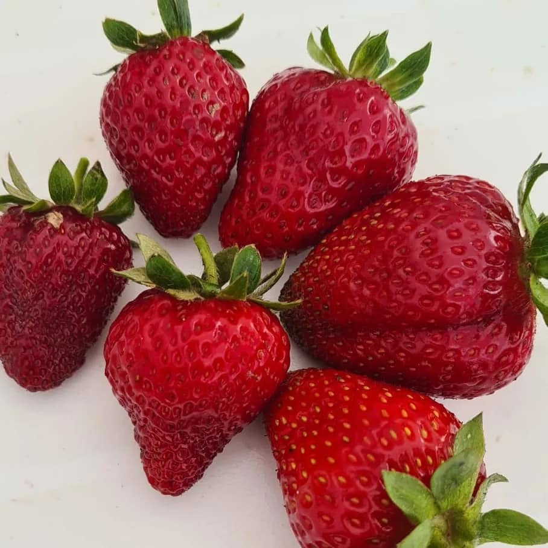
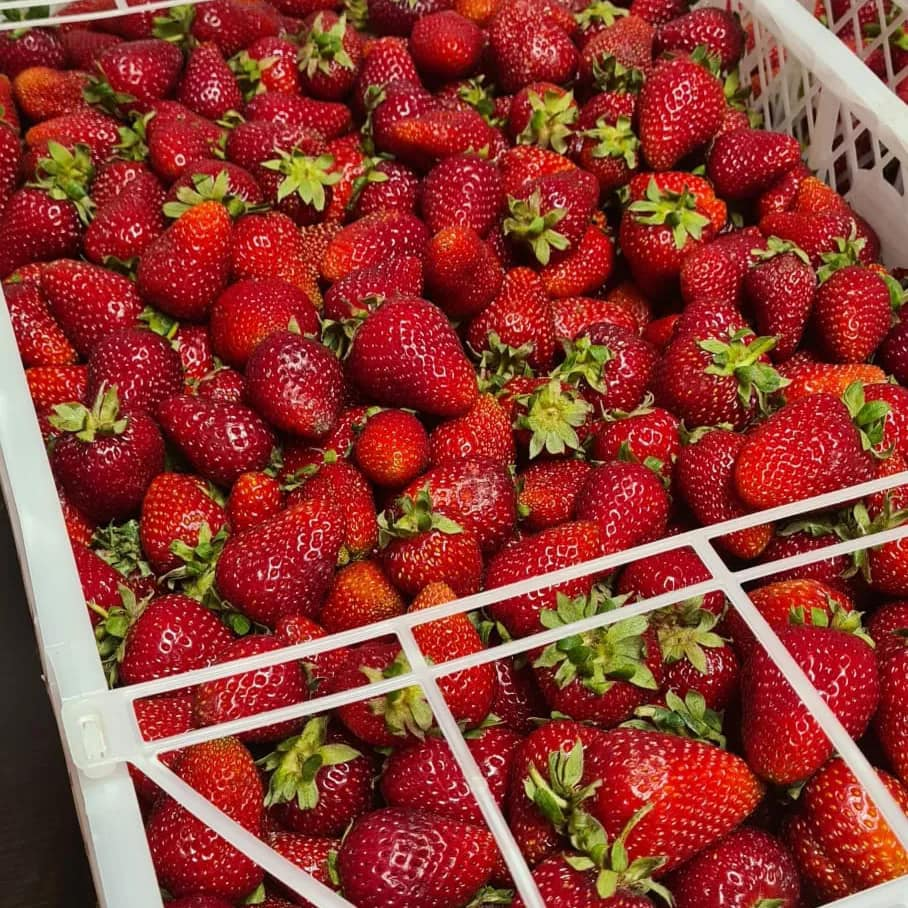
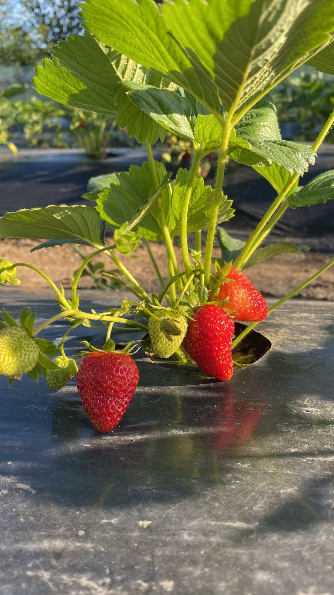

Gust natural și aromă intensă
Fiecare căpșună este culeasă când este perfect coaptă, asigurând un gust dulce, suculent și un parfum proaspăt care te aduce înapoi în livadă.
Bine ai venit la
Imaginea reală a căpșunilor noastre, proaspete și dulci, direct din Bretea Mureșană.
STOC EPUIZAT TEMPORAR!!
Fiecare căpșună este culeasă când este perfect coaptă, asigurând un gust dulce, suculent și un parfum proaspăt care te aduce înapoi în livadă.
Livrarea rapidă și prospețimea sunt prioritatea noastră. Primești fructe culese în aceeași zi, gata să fie savurate sau oferite cadou.
Organizăm degustări, comenzi pentru evenimente și recomandări pentru cele mai frumoase prăjituri și deserturi cu căpșuni.



Sună-ne și rezervă-ți căpșunile proaspete de astăzi:
Adresa: Bretea Mureșană nr. 12
Recomandat pentru livrări locale și vizite în livadă. Pregătim totul cu grijă pentru familia ta.
Livrare la domiciliu pentru comenzi de peste 3 kg.